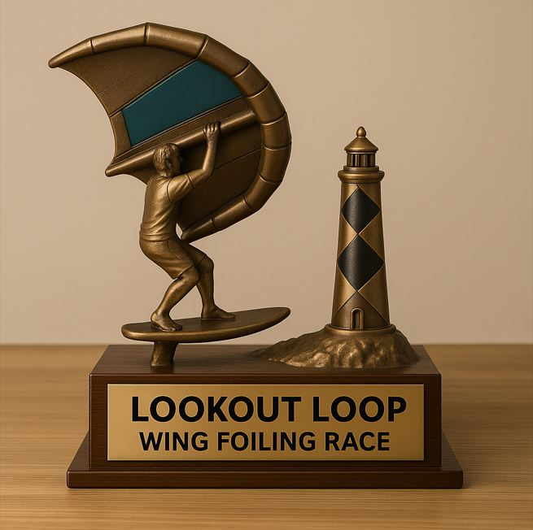

First Annual Event – Suggestions Welcome!
Race Date: Saturday, August 7 annually – in celebration of
National Lighthouse Day
Start: In-water start at 8:00 AM sharp off the southeast tip of Harkers Island, NC
Finish: Time stops when you cross due south of the boat ramp
“If anything’s gonna happen, it’s gonna happen out there.” – Captain Ron
Sign Up
Even if you're not sure you'll be on "the list" if we do a test run.
Click here to register via Google Form
Race Roster
View the current race roster here
Course Overview
🌍 View the Lookout Loop Course in Google Earth

Classes
Open to all wind-powered craft, even if she’s got a few screws loose:
- Wing Foilers
- Monohulls
- Catamarans
- Windsurfers
“She’s got what we call... character.”
Divisions
Bight Division: Round Barden Inlet Buoy #1 and return to the start. ~10 nautical miles as the crow flies.
Loop Division: Continue through the Bight, travel ocean-side behind Shackleford Banks, re-enter through Beaufort Inlet (must pass west of Buoy 12), and return to Harkers Island by any route. ~21 nautical miles.
“We had just enough fuel to make it to San Juan. And now... we're out of fuel.!”
Safety & Equipment
Event Safety Protocols and Checklist
- Swift currents expected, especially in inlets. Don’t worry — Captain Ron has seen worse. Probably.
- Required: PFD, helmet, and PLB (Personal Locator Beacon).
- Recommended: Spot Tracker or Garmin InReach, Smartphone, handheld VHF, emergency tourniquet.
- Safety boat coverage:
- One safety boat follows leaders to mid-pack
- Second follows last participant
- Third (optional) turns around at the Bight
Cost
Entry fee will help cover fuel and crew for safety boats.
Maybe a little extra for sunglasses and engine parts — you know, just in case.
“A diesel loves her oil same as a sailor loves rum.”
🏆 The Trophy
To be 3D printed and awarded with great glory.
